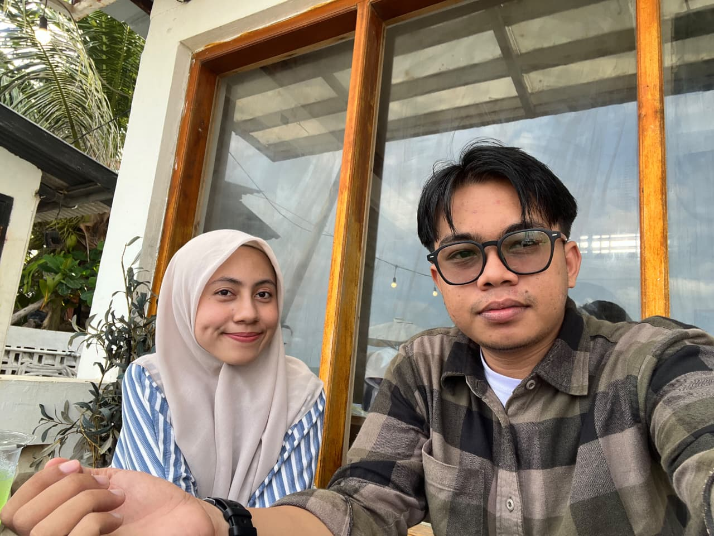
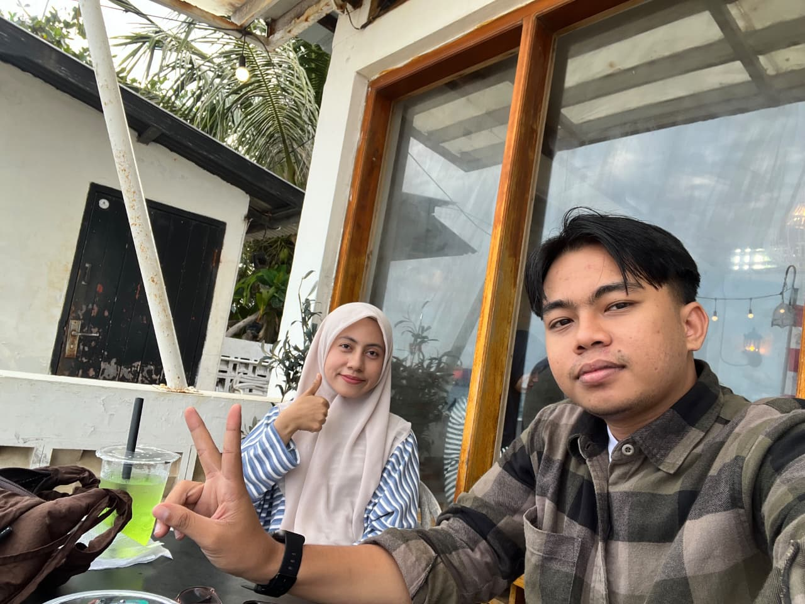
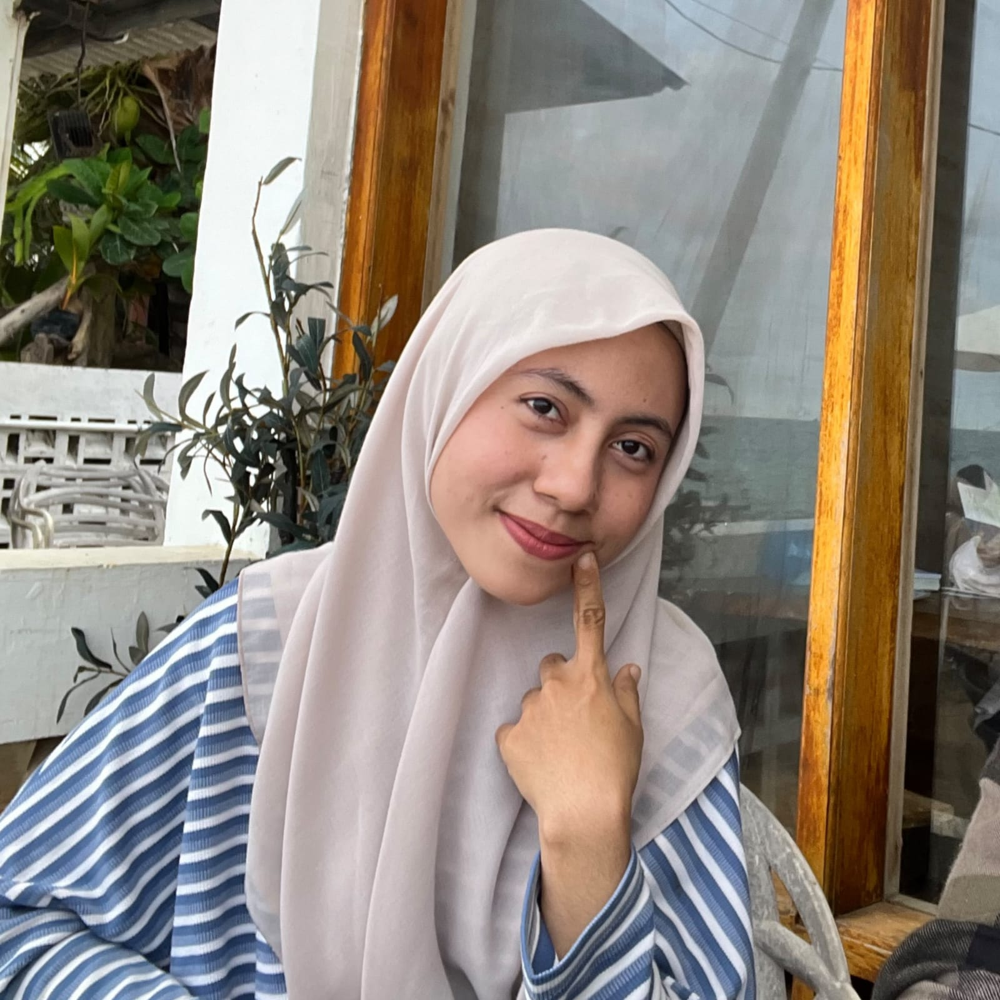
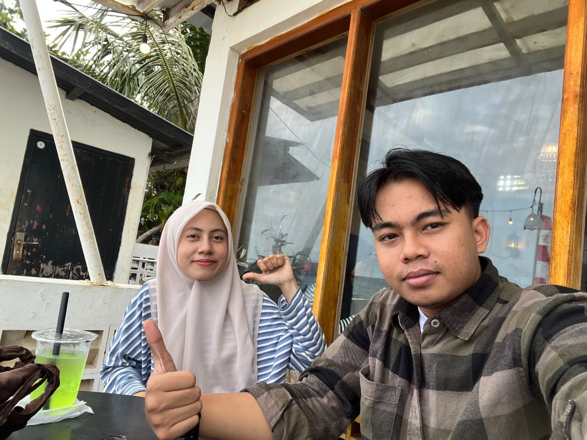
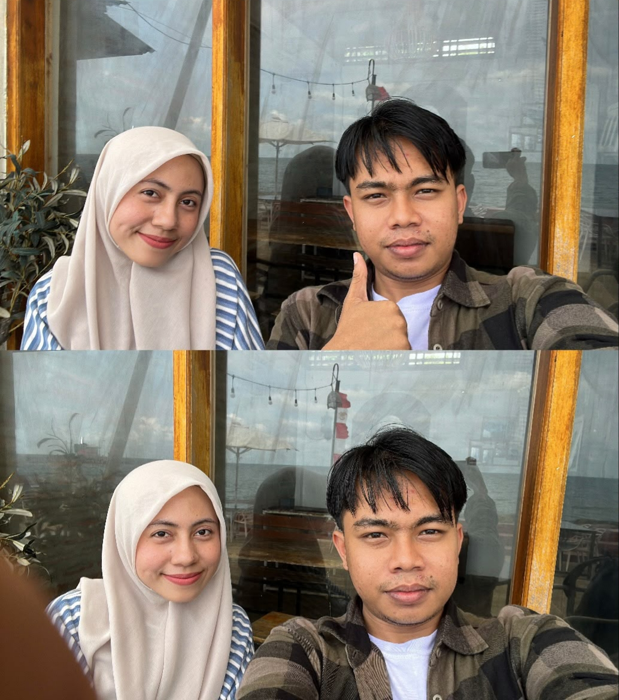
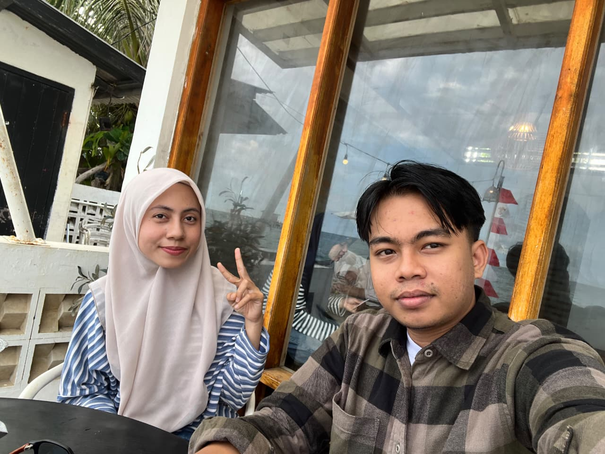
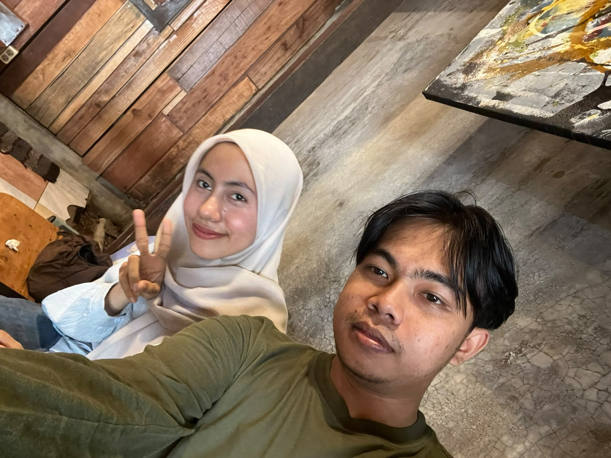
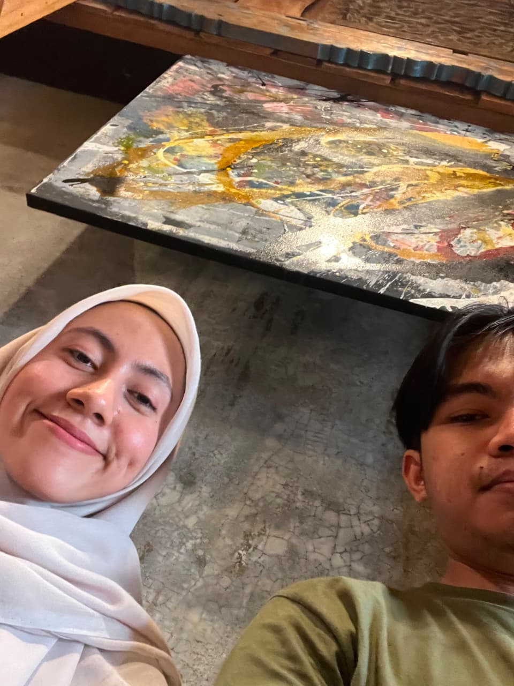

kurang peka, tapi gengsi.
kadang sebenarnya ngerti,
cuma gengsi buat ngaku.
NADD / 23
something made for you.
for your 23rd
23 looks good on you.

01 / NADD
but when you do... you're even sweeter.
02 / THE LITTLE THINGS
small things. somehow, memorable.
kadang sebenarnya ngerti,
cuma gengsi buat ngaku.
nggak selalu sadar kalau dirinya lucu.
tapi ya... emang lucu.
tapi gapapa sii.
yang penting nggak lupa aku.
bisa tiba-tiba jadi dingin.
yaudah, tunggu mood-nya balik aja.
kalau lagi mood,
gaya kali dia.
03 / THE FIRSTS
there were little beginnings.
it was supposed to be about your phone.
you lost it. I called. we talked about the phone for a little while — then somehow, the conversation went somewhere else.
HERO KUPI
my favorite warkop.
and now, one of the places that belongs to a memory of us.
fresh out of your thesis defense.
your friends had gone home.
you were bored.
so you asked me to jog.
04 / OUR PHOTOS
we didn't take photos every time we met.
just enough to remember these.







hover a frame · move across to see the colors
ALMOST 9
YEARS.
AND SOMEHOW, ALL THAT TIME
friends.
then best friends.
almost nine years later,
we've collected so many ordinary days
that somehow don't feel ordinary anymore.
06 / MY WISHES FOR YOU
I hope you keep finding reasons to laugh.
I hope the things you've been working for find their way to you.
I hope this new chapter is gentle with you.
and most of all, I hope you know how loved you are.
07 / THE LETTER
take your time.Nadd,
almost nine years is a strange amount of time to put into words.
we started as friends, became best friends, and somehow collected all these small memories along the way — calls that were supposed to be about one thing, random plans, little places, and the kind of time together that never really needed a reason.
one thing I've always valued most is your time. maybe because I know how easy it is for life to get busy, and how much it means whenever you still choose to spend some of yours with me.
so on your birthday, I don't want to make this about what I expect from you. I just want you to know what I feel, honestly.
you mean more to me than I usually know how to say.
and I hope this new chapter brings you more things to be excited about, more reasons to laugh, and more days that feel like yours.
— Dil
08 / END
I hope this new chapter is kind to you.
— Dil